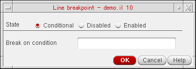
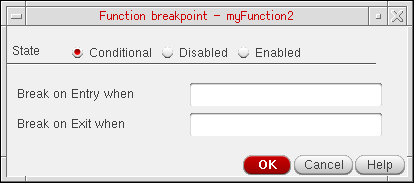

Setting Conditional Breakpoints
When you specify conditions for breakpoints, the debugger stops only when the breakpoint is triggered and its associated condition is met. If the condition evaluates to false, the program continues to run.
Setting Conditional Breakpoints on Lines
To set a conditional breakpoint on a line:
- In the source code pane, click the line of code where you want to set a conditional breakpoint and do one of the following:
-
Right-click in the left margin of the source code pane and choose Set/Modify Conditional Breakpoint from the context menu.
The Line breakpoint dialog box displays.
 - Select an appropriate breakpoint state. The available options are: Conditional, Disabled, and Enabled.
- In the Break on condition field, specify the condition that you want to evaluate when the breakpoint is reached.
- Click OK.
The (conditional) sign displays in the left margin of the source code pane next to the line of code, indicating a conditional breakpoint.
Setting Conditional Breakpoints on Functions
If the function on which you set the breakpoint is a regular function, the breakpoint is set only on that function; if it is a SKILL++ method (with a defmethod declaration), then the breakpoint is set only on that particular method’s declaration; and if it is a generic function (with a defgeneric declaration) then the breakpoint is set on all methods that belong to that function.
If you do not specify a valid entry or exit criteria in the Function breakpoint dialog box, a warning message displays in the CIW, indicating an incomplete breakpoint criteria. Specify the criteria again.
To set a conditional breakpoint on a function:
- In the source code pane, click the line containing a program function.
-
Right-click in the left margin of the source code pane and choose Set/Modify Conditional Breakpoint from the context-menu.
The Function breakpoint dialog box displays.
 - Select an appropriate breakpoint criteria. The available options are: Conditional, Disabled, and Enabled.
- Specify when the breakpoint condition needs to be evaluated. You have the following options:
- Click OK. When finished, a conditional breakpoint icon displays in the left margin of the source code pane.
Related Topics
Configuration of Conditional Breakpoints
Setting Unconditional Breakpoints
Enabling and Disabling Conditional Breakpoints
Return to top